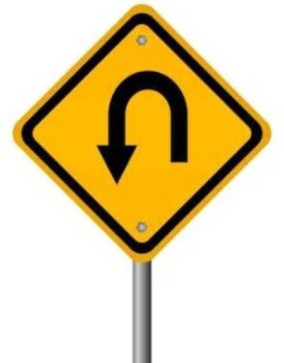

여자친구는 2015년 1월16일에 데뷔한 걸그룹이다
중소기업에서 데뷔했음에도 불구하고 신인상을 수상하고 자신들의 소속사를
대기업까지 키운 그룹이다
여잔친구의 팬 이름은 버디라고 부르며 이는 친구라는 뜻이다
여자친구가 유명해진 사건은
공연을 하는 도중에 멤버 한 명이 바닥이 미끄러워 여러차례 넘어졌지만 일어나서 열심히 안무를 하는 영상으로 인해 많은 인기를 얻었다
mtv 유럽 뮤직 어워드(ema)는 여자친구를 현존하는 대한민국 걸그룹 중 가장 청순하고 클래식한 아이돌이라고 설명했다
또한 미국 빌보드는 여자친구를 2015년 주목해야 할 k-pop 아티스트 top 5에 선정했으며
k-pop 칼럼코너 k-town을 통해 k-pop에서 가장 눈에 띄는 걸그룹이라고 평가했다/body>
여자친구는 2021년 5월 22일 소속사인 쏘스뮤직과의 전속계약이 만료되어 해체되었다
하지만 팬들은 이런 쏘스뮤직에 행동에 대해 팬들을 생각하지 않고 무책임하게 해체를 시킨 행동이라고 비난 받고있다
